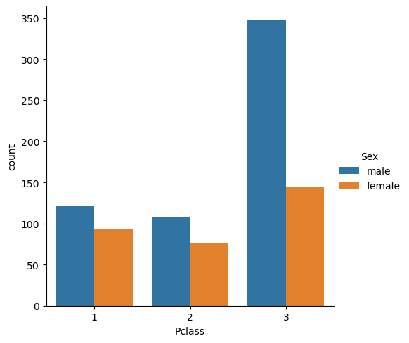
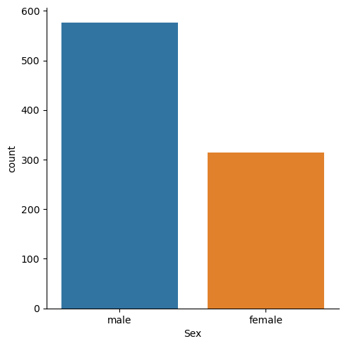
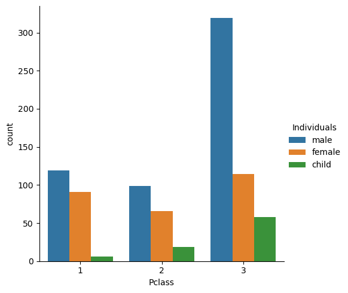
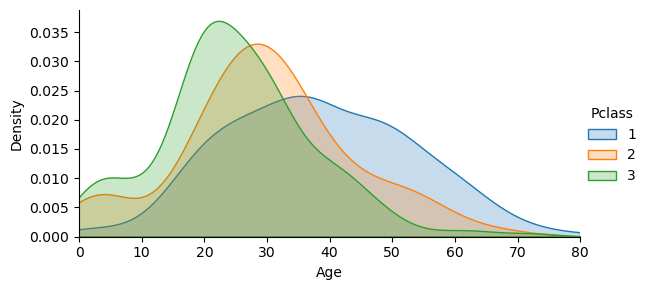
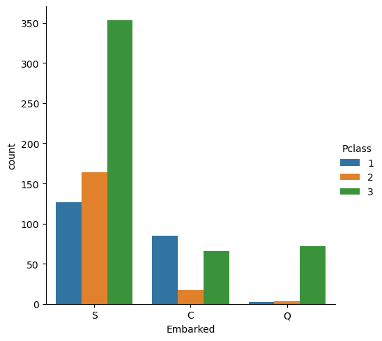
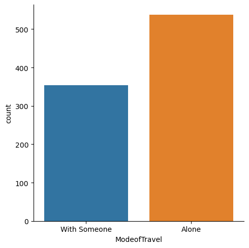

Titanic Dataset: Exploratory Data Analysis#


This is an EDA of the famous Titanic (shown in Fig. 1) dataset from Kaggle. Through EDA, I will try to achive the following goals:
Investigate the demographic characteristics of the Titanic’s passengers, such as their age, gender, and social class, to gain a better understanding of the composition of the passenger list.
Explore the origins of the Titanic’s passengers, including their countries of origin, to gain a better understanding of the cultural diversity of the passenger list.
Determine which passengers traveled with their families and which ones traveled alone to gain insights into the social dynamics of the passengers.
Matplotlib is building the font cache; this may take a moment.
---------------------------------------------------------------------------
KeyboardInterrupt Traceback (most recent call last)
Cell In[1], line 3
1 import pandas as pd
2 import numpy as np
----> 3 import matplotlib.pyplot as plt
4 import seaborn as sns
File /opt/miniconda3/lib/python3.13/site-packages/matplotlib/pyplot.py:57
55 from cycler import cycler # noqa: F401
56 import matplotlib
---> 57 import matplotlib.colorbar
58 import matplotlib.image
59 from matplotlib import _api
File /opt/miniconda3/lib/python3.13/site-packages/matplotlib/colorbar.py:19
16 import numpy as np
18 import matplotlib as mpl
---> 19 from matplotlib import _api, cbook, collections, cm, colors, contour, ticker
20 import matplotlib.artist as martist
21 import matplotlib.patches as mpatches
File /opt/miniconda3/lib/python3.13/site-packages/matplotlib/contour.py:15
13 import matplotlib as mpl
14 from matplotlib import _api, _docstring
---> 15 from matplotlib.backend_bases import MouseButton
16 from matplotlib.lines import Line2D
17 from matplotlib.path import Path
File /opt/miniconda3/lib/python3.13/site-packages/matplotlib/backend_bases.py:49
46 import numpy as np
48 import matplotlib as mpl
---> 49 from matplotlib import (
50 _api, backend_tools as tools, cbook, colors, _docstring, text,
51 _tight_bbox, transforms, widgets, is_interactive, rcParams)
52 from matplotlib._pylab_helpers import Gcf
53 from matplotlib.backend_managers import ToolManager
File /opt/miniconda3/lib/python3.13/site-packages/matplotlib/text.py:16
14 from . import _api, artist, cbook, _docstring
15 from .artist import Artist
---> 16 from .font_manager import FontProperties
17 from .patches import FancyArrowPatch, FancyBboxPatch, Rectangle
18 from .textpath import TextPath, TextToPath # noqa # Logically located here
File /opt/miniconda3/lib/python3.13/site-packages/matplotlib/font_manager.py:1643
1639 _log.info("generated new fontManager")
1640 return fm
-> 1643 fontManager = _load_fontmanager()
1644 findfont = fontManager.findfont
1645 get_font_names = fontManager.get_font_names
File /opt/miniconda3/lib/python3.13/site-packages/matplotlib/font_manager.py:1637, in _load_fontmanager(try_read_cache)
1635 _log.debug("Using fontManager instance from %s", fm_path)
1636 return fm
-> 1637 fm = FontManager()
1638 json_dump(fm, fm_path)
1639 _log.info("generated new fontManager")
File /opt/miniconda3/lib/python3.13/site-packages/matplotlib/font_manager.py:1101, in FontManager.__init__(self, size, weight)
1098 try:
1099 for fontext in ["afm", "ttf"]:
1100 for path in [*findSystemFonts(paths, fontext=fontext),
-> 1101 *findSystemFonts(fontext=fontext)]:
1102 try:
1103 self.addfont(path)
File /opt/miniconda3/lib/python3.13/site-packages/matplotlib/font_manager.py:293, in findSystemFonts(fontpaths, fontext)
291 installed_fonts = _get_fontconfig_fonts()
292 if sys.platform == 'darwin':
--> 293 installed_fonts += _get_macos_fonts()
294 fontpaths = [*X11FontDirectories, *OSXFontDirectories]
295 else:
File /opt/miniconda3/lib/python3.13/site-packages/matplotlib/font_manager.py:269, in _get_macos_fonts()
266 """Cache and list the font paths known to ``system_profiler SPFontsDataType``."""
267 try:
268 d, = plistlib.loads(
--> 269 subprocess.check_output(["system_profiler", "-xml", "SPFontsDataType"]))
270 except (OSError, subprocess.CalledProcessError, plistlib.InvalidFileException):
271 return []
File /opt/miniconda3/lib/python3.13/subprocess.py:472, in check_output(timeout, *popenargs, **kwargs)
469 empty = b''
470 kwargs['input'] = empty
--> 472 return run(*popenargs, stdout=PIPE, timeout=timeout, check=True,
473 **kwargs).stdout
File /opt/miniconda3/lib/python3.13/subprocess.py:556, in run(input, capture_output, timeout, check, *popenargs, **kwargs)
554 with Popen(*popenargs, **kwargs) as process:
555 try:
--> 556 stdout, stderr = process.communicate(input, timeout=timeout)
557 except TimeoutExpired as exc:
558 process.kill()
File /opt/miniconda3/lib/python3.13/subprocess.py:1209, in Popen.communicate(self, input, timeout)
1207 self._stdin_write(input)
1208 elif self.stdout:
-> 1209 stdout = self.stdout.read()
1210 self.stdout.close()
1211 elif self.stderr:
KeyboardInterrupt:
# load the dataset.
titanic_df = pd.read_csv('data/titanic_train.csv')
# preview your dataset
titanic_df.head()
# information about the dataset.
titanic_df.info()
<class 'pandas.core.frame.DataFrame'>
RangeIndex: 891 entries, 0 to 890
Data columns (total 10 columns):
# Column Non-Null Count Dtype
--- ------ -------------- -----
0 Pclass 891 non-null int64
1 Name 891 non-null object
2 Sex 891 non-null object
3 Age 714 non-null float64
4 SibSp 891 non-null int64
5 Parch 891 non-null int64
6 Ticket 891 non-null object
7 Fare 891 non-null float64
8 Cabin 204 non-null object
9 Embarked 889 non-null object
dtypes: float64(2), int64(3), object(5)
memory usage: 69.7+ KB
Demographic characteristics of the Titanic’s passengers#
Let’s look at some demographical information about the passengers.
Let’s take a look at socio-economic class of a person (Pclass column)
<seaborn.axisgrid.FacetGrid at 0x17756d3af20>

Let’s explore passangers’ gender:
<seaborn.axisgrid.FacetGrid at 0x17756eefa60>

Figure summary: there were considerably more male passengers onboard.
Note: It is important to acknowledge that gender is not binary and that there are many individuals who do not identify as strictly male or female. However, the dataset available for the Titanic passengers only includes information on male and female passengers. While this limitation may not fully capture the diversity of gender identities among the passengers, it is still valuable in providing insights into the demographics and social dynamics of the Titanic’s passengers.
Let’s now figure out how many kids were on the Titanic:
# function to create category child
def child(df):
sex=df['Sex']
age=df['Age']
return 'child' if age < 16 else sex
# create a new column "Individuals"
titanic_df['Individuals'] = titanic_df.apply(child,axis=1)
# see counts
print(titanic_df['Individuals'].value_counts())
male 537
female 271
child 83
Name: Individuals, dtype: int64
Now, let’s check teh distribution of men, women and children belonging to different socio-economic classes.
<seaborn.axisgrid.FacetGrid at 0x17757664160>

Figure summary: There are way more male passengers than woman or childeren in the 3rd class than in any other class.
Let’s check out how the age distribution varies for different classes
<seaborn.axisgrid.FacetGrid at 0x177577a73a0>

Figure summary: first class passengers were older that passagenrs of other class
Explore the origins of the Titanic’s passengers#
The Embarked columns are abbreviation of the following port of embarkation:
C = Cherbourg
Q = Queenstown
S = Southampton
<seaborn.axisgrid.FacetGrid at 0x177577a7640>

Figure summary: Most of the 3rd class passengers embarked from Southampton
Determine which passengers traveled with their families#
we need 2 columns:
SibsSP : number of siblings or spouses that a passenger had aboard.
Parch : number of parents or children someone had on the ship.
We can combine teh column to determine whetehr the passanger was alone or with someone and record in in ModeofTravel column:
#Adding the number of family a passenger had onboard
titanic_df['ModeofTravel'] = titanic_df.SibSp + titanic_df.Parch
titanic_df['ModeofTravel'] = titanic_df['ModeofTravel'].apply(lambda x: 'With Someone' if x > 0 else 'Alone')
<seaborn.axisgrid.FacetGrid at 0x177579d9930>

Figure summary: The majority of people on the ship travled with someone.